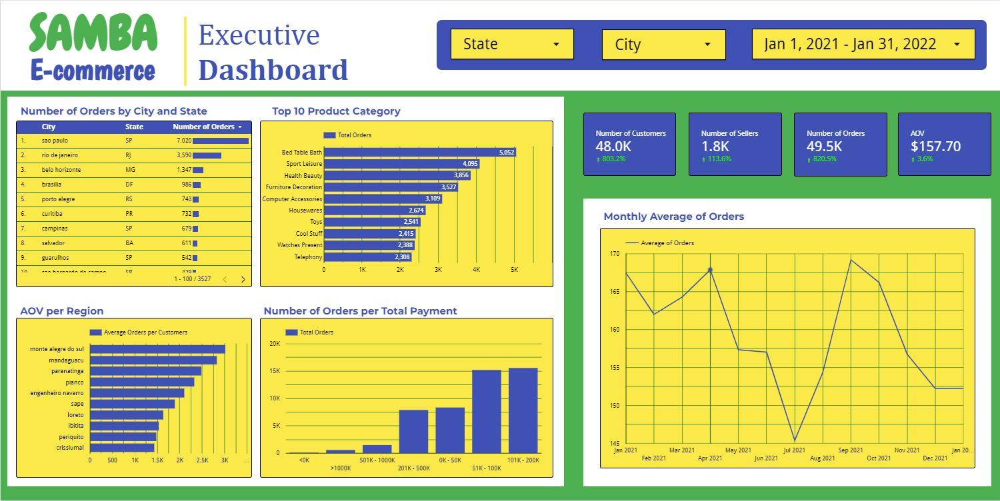

Prioritize São Paulo
Use its established customer base as the starting point for a focused sales campaign.
The business.
The rhythm.
The next move.
THE BRIEF
Samba wants to grow sales in 2022. The first step: give leadership a monthly view of orders, customers, sellers and spending.
Two dashboards bring the business together. The findings point toward a focused approach: understand the rebound, prioritize established demand, and look beyond attention-grabbing averages.
Historical case study · January 2021–January 2022
01 / THE BIG PICTURE
Looker Studio connects the headline metrics with cities and categories. Tableau adds a view of customers, sellers, item quantity and monthly payments.

02 / THE REBOUND
January 2022 brought 6,900 orders, up 28.2% from December. Customers rose 27.9% and sellers 12.5%. Average order value barely moved: $152.22 to $152.23.
| Month | Orders | Customers | Sellers | Payments ($) | AOV ($) |
|---|
03 / WHERE DEMAND LIVES
The city leads with 7,020 orders. Across the wider state, 19,048 unique customers make São Paulo the largest customer base in the dataset.
04 / WHAT PEOPLE BUY
Bed, Table & Bath leads with 5,052 orders, followed by Sports & Leisure and Health & Beauty. Together, these three categories account for 26.2% of orders.
qty_item field, not the number of distinct products in a basket.Hygiene Diapers records seven items across two orders. Its 3.5-item average leads the ranking, but the sample is too small to treat as a dependable merchandising opportunity.
05 / THE NEXT MOVE
Use its established customer base as the starting point for a focused sales campaign.
Bed, Table & Bath, Sports & Leisure, and Health & Beauty are candidates. Check demand within the target market before choosing an offer.
Track orders and AOV together. Test campaigns against a comparison group before attributing growth to promotion.
The dashboards identify opportunities.
The next step is to test them.
These are proposed actions, not measured campaign effects or a sales forecast.
Orders, Order History and Payments each contain 49,544 unique order IDs. The article joins them one-to-one with no unmatched orders. All records are marked Delivered and fall between January 2021 and January 2022.
Orders are distinct order IDs. Customers and sellers are distinct IDs within the selected period or group. Payment totals sum total_payment_value once per order. AOV divides that total by order count. Monthly unique counts are not additive across time.
Item quantity averages qty_item, which the data dictionary describes as quantity for the related product. It does not measure distinct items. Category names are lightly edited for readability; underlying groups are unchanged. Malformed geolocation fields are not used.
Monetary values use the dashboards' $ notation without currency conversion. The workbook does not identify an ISO currency code. Payments are not a measure of profit.
The Looker Studio workflow blends the tables and tidies category labels. The Tableau workflow uses inner joins, including the Advanced table. The images preserve those dashboard snapshots; the article's charts are recalculated from the saved workbook.
Some snapshot labels are imprecise: the monthly “average orders” line is average order value, the state view counts unique customers, and “unique items” is item quantity. The article names these measures directly.
Some lower-ranking values also differ. For example, the Looker image shows 2,388 Telephony orders; the workbook contains 2,308. House Comfort 2 has 21 items across 17 orders, an average of 1.24. The workbook, not a visually estimated bar length, supplies the interactive values.
The dashboard's AOV ranking groups by city name alone. This article separates same-named cities by state. That puts Trindade, PE first at $3,184.55, also from just one order. Monte Alegre do Sul remains the leader when grouping by city name alone.
The workbook is a saved historical export, not a live feed. The analysis describes patterns, not their causes. Campaign exposure, costs and experimental outcomes are not available.